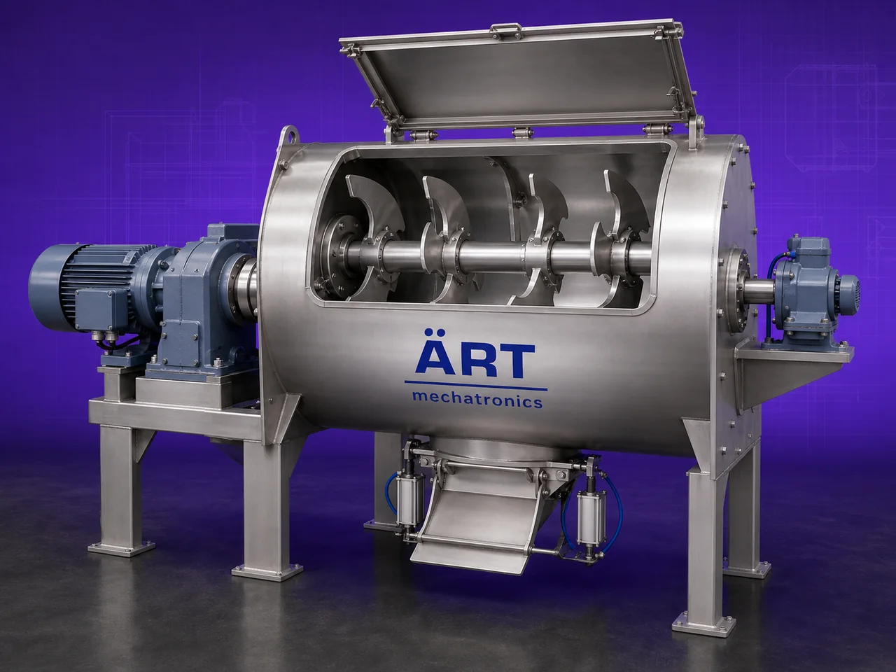

Plow Mixer Machine (Industrial Ploughshare Mixing System for Powders, Granules & Semi-Wet Materials)
A Plow Mixer Machine, also known as a Ploughshare Mixer or High-Speed Industrial Blender, is an advanced industrial mixing system designed for rapid, intensive, and homogeneous mixing of powders, granules, fibers, flakes, and semi-wet materials.

About the Plow Mixer
The machine uses specially designed plow-shaped mixing elements (ploughshares) mounted on a horizontal shaft, which create a mechanical fluidized mixing zone inside the chamber. This action causes materials to move in multiple directions at high speed, ensuring extremely fast and uniform blending.
Plow mixers are widely used in industries such as:
• Food processing
• Pharmaceuticals
• Chemicals
• Nutraceuticals
• Detergents
• Agro products
• Construction materials
• Minerals
• Specialty powder industries
where high-speed mixing, precise blending, rapid dispersion, and excellent batch uniformity are essential.
The machine is especially suitable for:
- Powder mixing
- Liquid addition and coating
- Agglomeration
- Moist material mixing
- Fiber mixing
- Fast batch processing
ART Mechatronics offers heavy-duty industrial plow mixer machines, engineered for high mixing efficiency, low processing time, hygienic operation, and reliable industrial performance.
One machine, many names
Buyers search for this equipment under many terms — we manufacture all of them:
Working Principle of Plow Mixer Machine
Ensures very fast and homogeneous mixing
creates uniform mixing throughout batch
can be sprayed during mixing
Types of Plow Mixer Machines
Industries Using Plow Mixer Machine
🍃 Food Processing Industry
- Powder premix blending
- Flavor mixing
💊 Pharmaceutical Industry
- Powder and granule mixing
⚗️ Chemical Industry
- Chemical powder blending
🧼 Detergent Industry
- Powder detergent mixing
🌿 Nutraceutical Industry
- Protein and supplement blending
🏗️ Construction Industry
- Dry mortar and powder mixing
🐄 Feed Industry
- Animal feed blending
Features & Advantages
- Extremely fast mixing process
- High mixing uniformity
- Suitable for powders and semi-wet materials
- Mechanical fluidized mixing action
- Optional chopper for lump breaking
- Excellent liquid addition capability
- Low mixing cycle time
- Heavy-duty industrial construction
- Hygienic and easy-to-clean design
- Suitable for large production batches
Technical Highlights
- Capacity: Small batch to large industrial scale
- Mixing Type: Ploughshare fluidized mixing
- Construction: Stainless Steel / Mild Steel
- Chopper System: Optional high-speed chopper
- Heating/Cooling: Optional jacketed design
- Drive: Motor with gearbox
- Operation: Manual / Automatic / PLC-based
Turnkey Mixing Solutions
ART Mechatronics offers:
- Complete plow mixer system design
- Liquid spraying systems
- Lump breaking integration
- Dust collection integration
- Feeding and discharge automation
- Installation & commissioning
- After-sales service & AMC
Why Choose Art Mechatronics
- Expertise in advanced industrial mixing systems
- Customized solutions for multiple industries
- High-performance and durable machines
- Hygienic and energy-efficient designs
- Proven industrial reliability
Applications
- Food Processing Plants
- Pharmaceutical Manufacturing Units
- Chemical Processing Industries
- Nutraceutical Production Plants
- Detergent Manufacturing Units
- Construction Material Plants
Related Mixing & Blending machines
Get pricing & specs for the Plow Mixer
Share the product, target capacity, current process and plant location. These details help our engineers discuss the right machine or line configuration.
One partner, from design to start-up
ART Mechatronics designs, manufactures, installs and commissions your Plow Mixer solution with regional presence in India, UAE and Thailand.